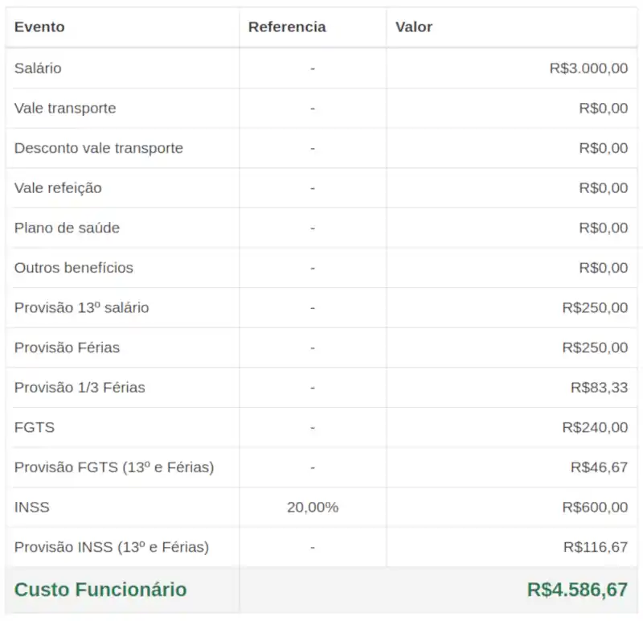

Venda mais e melhor, sem estar presente, sem perder tempo e sem depender de vendedores.
Não há nada mais frustrante do que saber que seu produto ou serviço RESOLVE um problemão, mas ninguém dá a mínima atenção para ele e para você.
Principalmente se...
você dedicou muito tempo para criá-lo;
você confia demais na eficiência dele;
os poucos consumidores/clientes aos quais você já vendeu adoraram;
você tem um ótimo preço em relação ao valor agregado;
nenhum concorrente oferece algo melhor;
é um produto/serviço inovador.
Se a oferta é boa, então, talvez, você não esteja sabendo vender tão bem o seu peixe.
NADA ACONTECE ATÉ QUE UMA VENDA ACONTEÇA. Você até pode ter o melhor produto/serviço do mundo, mas as pessoas precisam ser convencidas disso. Não há atalhos. Esse trabalho precisa ser bem feito. Porém, talvez você...
não seja um bom vendedor;
perde muito tempo tentando vender de maneira pouco eficiente;
fica frustrado, porque pessoas tomam seu tempo e não fecham negócio;
não consegue vender o suficiente para que seu negócio prospere;
não sabe gerar percepção de valor, e as pessoas somem quando você informa seu preço.
Confesso-lhe que eu também sofri muito por causa disso. Acontece que ninguém nunca nos ensinou a vender, nem disseram que esta seria uma habilidade tão importante no mundo dos negócios. Mas a culpa não é delas, é nossa.
Tenha paciência, que há uma boa saída...
Com o tempo, finalmente eu percebi algo óbvio que me fez resolver a deficiência em vendas, definitivamente.
É simples. Olhe para o mercado ao seu redor. Nenhum empresário "se mata" para vender se ele não tem essa habilidade tão desenvolvida. Eles criam uma equipe de vendas! Mas, convenhamos, sai caro e só é viável quando a compensação é substancial.
A boa notícia é que você não precisa de uma equipe de vendas.
Se analisar bem, existe um componente muito ÓBVIO na arte de vender, que está presente em qualquer tipo de venda. Você tem ideia de qual é?!
Esse componente é a PERSUASÃO fundamentada na vontade de realmente AJUDAR as pessoas. Se você der mais atenção a isso do que a qualquer outra coisa e usar um formato de venda bastante eficiente, que não dependa da sua presença, nem de terceiros, você nunca mais ficará sem clientes.
Ótimo! Mas sejamos pragmáticos. Talvez você...
entende pouco ou nada de persuasão;
não saiba se comunicar tão bem;
desconhece a estrutura da argumentação;
desconhece técnicas de retórica;
não pode ou não quer perder tempo quebrando a cabeça com isso;
nem imagina como ordernar o pensamento;
desconhece ou não sabe aplicar gatilhos mentais;
nunca estudou comportamentos e hábitos de consumo.
É... Eu não disse que seria simples, mas...
...ainda bem que existem profissionais capacitados para nos ajudar, que realmente dominam a ciência por trás desse grande quebra-cabeça de palavras. Cada macaco no seu galho! Sei muito pouco sobre mecânica. Por isso, jamais me atreveria a tentar reparar sequer o motor de uma mobilete.
Se você está verdadeiramente comprometido com seus resultados e não pretende economizar esforços para atingí-los, nada disso o limitará.
Quero que saiba que existe um cenário perfeito de negócios ao seu alcance.
Não seria EXCELENTE...
Não seria excelente atrair somente clientes ideais e de alta qualidade?
Aqueles que você percebe que são perfeitos para a solução que você oferece e que são capazes de enxergar o real valor da sua oferta.
Não seria excelente atingir milhares de pessoas e ser DESEJADO por muitas delas?
Um ótimo sinal de que um negócio está plenamente ativo e prosperando é quando a demanda por ele excede sua capacidade de atendimento.
Não seria excelente repelir clientes tóxicos, que só lhe gerariam problemas?
Você reza todos os dias para que essas pessoas chatas não entrem em sua vida, pois elas criam problemas onde não existem e sugam toda sua energia.
Não seria excelente evitar explicar as mesmas coisas 9.972 vezes?
Pense na incalculável quantidade de horas que você já dedicou para explicar a mesma coisa e no quanto poderia ter lucrado a mais dedicando-se totalmente à produção.
Não seria excelente tirar quase todas as dúvidas das pessoas, em um só lugar?
Imagine que você não tivesse mais que parar seus afazeres lucrativos só para responder dúvidas comuns e ainda fechasse negócio apenas com pessoas previamente esclarecidas e já preparadas para o momento do fechamento da venda, com todas ou quase todas as dúvidas já tiradas. Isso não tem preço!!!
Não seria excelente focar no que faz de melhor, enquanto as vendas entram?
Não há sensação pior do que ter que reservar horas durante a semana para vender, sendo que você nem é especialista em vendas. Isso precisa acabar.
Não seria excelente ter um "supervendedor" 24h por dia, 365 dias por ano?
Qual vendedor "sênior mega blaster ultra" conseguiria isso? Até o super-homem repousa. Graças à internet, isso é possível.
Não seria excelente dispensar uma onerosa equipe de vendedores?
Se posso vender eficientemente, sem todo o custo e dor de cabeça que uma equipe gera, para que ter uma?! Equipe de venda?! Não, obrigado.
Não seria excelente economizar o máximo possível?
Maximizar os ganhos e minimizar as perdas, essa é a chave para que qualquer negócio se mantenha financeiramente saudável.
Você precisa de uma CARTA DE VENDA tão irresistível quanto esta, que mostre o caminho das pedras para as pessoas e as faça "IMPLORAR" pela sua ajuda.
"Excelente. Mas quanto custa? É caro?!"
Não é custo. É INVESTIMENTO. Em finanças, pensamos em termos de PASSIVOS e ATIVOS. Passivos são coisas que você compra que só te darão custos ao longo do tempo (carro, casa na praia, móveis para o lar, etc.). Os ativos, pelo contrário, eles lhe darão lucro (máquinas de produção, marketing, etc.), desde que usados adequadamente.
Não é tão caro como você pode estar imaginando. Pelo contrário, é ridiculamente acessível em relação ao retorno que esse trabalho pode trazer para o seu empreendimento.
Façamos uma conta rápida.
Se você fosse contratar apenas um vendedor mediano, hoje, quanto pagaria por isso? No mínimo, pagaria R$ 3.000,00, fora os encargos trabalhistas que a gangue política toma para si. Então, um vendedor deste, como mostra a tabela abaixo, não sairia por menos que R$ 4.586,67.

R$ 4.586,67 x 12 meses = R$ 55.040,04 !!!
Não inclue: comissão, vale transporte, vale refeição, plano de saúde e outros benefícios.
Quantos clientes esse vendedor geraria para você?
Você é quem tem que responder a essa pergunta, mas creio que, dependendo da complexidade do seu negócio, ele não conseguiria visitar nem 3 clientes por dia. E de 60 clientes abordados no mês, quantos fechariam negócio?
Independentemente se contratar um vendedor é um bom ou mau negócio para você, ter uma carta de venda com os melhores argumentos trabalhando por você, incansavelmente, é ou não é um excelente negócio?!
Vendedores são caros e precisam ser supervisionados. Cartas de venda são baratas, eternas e dispensam supervisão.
Você paga um bom copywriter uma única vez e poderá desfrutar da carta de venda PARA SEMPRE, por anos e anos. E o trabalho não será feito "nas coxas", pois você contratará um especialista que AMA o que faz. Ele levará vários dias criando esse complexo de palavras que conduzirá prospects até o fechamento da venda.
Pronto para profissionalizar suas vendas?
Não deixe o melhor da festa para a concorrência.
Enquanto você se mantém inerte, sem mover uma palha sequer para "vender como gente grande", isto é, sem metodologia, perdendo dinheiro, tempo e paciência, a concorrência está te engolindo!
Mas assim que você entender esse conceito e começar a envolver as pessoas certas com as palavras certas que elas querem ouvir, você começará a ser procurado e não precisará ficar nas trincheiras de uma guerra de preços impossível de ser vencida.
É hora de aproveitar o melhor da festa e deixar a concorrência "a ver navios".
O QUE VOCÊ RECEBERÁ?
Você terá uma carta de venda profissionalmente escrita por mim, em até, no máximo, 45 dias úteis.
Formatos
Existem, basicamente, 4 formatos de carta de venda, e a definição de qual ou quais formatos são mais adequados depende muito do produto ou serviço, do público-alvo e das tuas intenções. Eu analisarei o seu caso e recomendarei o que for melhor.
carta de venda online, ou página de venda
carta de venda offline
carta de venda em vídeo
carta de venda em áudio
Semelhanças entre esses 4 formatos
Prestam-se, exatamente, à mesma função: vender!
Possuem, praticamente, as mesmas informações.
O conteúdo é, predominantemente, textual.
Sabendo usá-los, todos são muito efetivos.
Características de cada formato
Cartas de venda online
Podem ficar disponíveis para livre acesso ao público da internet.
Podem ficar restritas a apenas pessoas com o link de acesso.
São publicadas como página web públicas ou privadas.
Podem receber recursos multimídia: vídeo, áudio, imagens, etc.
Cartas de venda offline
Seu aspecto é o de uma carta mesmo.
Não ficam disponíveis online para acesso livre.
São enviadas somente para determinadas pessoas.
São mais versáteis: podem ser enviadas por e-mail.
Podem ser baixadas a partir em um link privado.
Podem ser impressas e entregues pessoalmente.
Podem ser enviadas por correio tradicional.
Cartas de venda em vídeo
A pessoa pode ou não aparecer no vídeo.
O vídeo pode exibir apenas palavras e frases-chave do texto lido.
Não requer que as pessoas leiam, apenas escutem e assistam.
O texto é adaptado para soar mais ainda como uma conversa.
Ideal para um público-alvo que prefere áudio e imagem em vez de texto.
Pode ser publicado online, em um site, de forma restrita ou irrestrita.
Cartas de venda em áudio
O texto é adaptado para soar mais ainda como uma conversa.
Dispensa trabalho de edição de imagens, pois só contém áudio.
Não requer que as pessoas leiam, apenas escutem.
Ideal para um público-alvo que prefere áudio.
Pode ser publicado online, em um site, de forma restrita ou irrestrita.
"Você faz tudo?"
Independentemente do formato, eu entregarei todo o conteúdo de forma muito bem organizada e com apontamentos e instruções, de modo que qualquer websdesigner ou profissional de edição de vídeo ou som de sua escolha saiba exatamente o que fazer. E ficarei disponível para acompanhamento e validação, até que você tenha a carta no formato escolhido e muito bem acabada, revisada e passada pelos critérios do meu controle de qualidade.
É muito mais simples do que você pode imaginar, porque...
... nenhum dos formatos demandará um alto nível de edição, a não ser que você tenha muito dinheiro e queira "torrá-lo". É possível fazer um trabalho muito bom e simples, que funcionará muito bem.
Hoje em dia, você encontra bons profissionais, em plataformas de freelancers, cujos serviços são bem acessíveis.
Garanto que qualquer bom profissional saberá o que fazer, pois eu já entrego tudo "mastigadinho", com referências e instruções completas.
Clicando no botão, você entrará em contato via e-mail. Para valorizar o seu tempo e o meu, só entre em contato se: (1) você deseja fechar negócio e quer saber o preço; (2) ou se já leu tudo e, mesmo assim, ainda restou dúvida. Muito obrigado. Aguardo seu contato!
ATENÇÃO!
Se você consultou o preço e achou caro, é sinal de que, talvez, ...
você não esteja dando o devido valor aos benefícios apontados;
ou acha que o trabalho é "facinho", "simplizinho";
ou não está 100% comprometido com seus resultados;
ou acha que é um custo, e não um investimento;
ou ainda não despertou para a mentalidade de abundância;
ou é mesquinho demais e nunca sairá da miséria;
ou prefere sustentar uma BMW velha em vez de apostar no seu sucesso.
Em qualquer um destes casos, esqueça! O serviço não é para você, e eu até prefiro não atendê-lo.
14 condições para que o trabalho seja bem realizado.
Ser apaixonado pelo que você faz.
Conhecer profundamente o perfil ideal de cliente.
Não ter preguiça para colaborar com informações precisas.
Levar a sério, do início ao fim, sendo participativo e cumprindo prazos.
Vender somente aquilo que você tem capacidade de entregar.
Não achar que esse trabalho é milagroso.
Entender que a venda envolve diversos fatores além da comunicação.
Querer, de fato, ajudar pessoas, sem estar interessado apenas no bolso delas.
Não exigir trabalho feito às pressas, sem qualidade.
Acreditar no poder e na "magia" das palavras.
Manter um relacionamento profissional salutar.
Não ser uma pessoa "tóxica", chata, intragável.
Valorizar e respeitar o que posso fazer por você.
Entender que não sou uma máquina de escrever.
IMPORTANTE!
Se você está iniciando agora na sua área de atuação e ainda não tem toda a expertise e as manhas de mercado, saiba que um bom trabalho de copywriting depende muito disso, sendo até determinante. Lembre-se: eu sou um facilitador, e meu papel é usar seu conhecimento. Se ele for raso, não há nada que eu possa fazer.
"Mas será que funciona mesmo?"
Na internet de hoje, repleta de falsas promessas, essa desconfiança é natural e bem-vinda. Eu costumo dizer que, se alguém, um dia, prometer deixá-lo rico ou dizer que é amigo do rei da lâmpada mágica, não acredite nisso. Eu não vendo milagre, nem sucesso. Há inúmeros fatores que levam uma pessoa a comprar ou não alguma coisa.
Se você nunca apostar em comunicação de venda, aí é que você não terá mesmo chances de ganho.
A escolha é sua. O mercado é imprevisível. Eu sei que copywriting funciona para muita gente, tanto é que você ainda está lendo este texto e deseja uma carta tão boa quanto essa, que venda por você, enquanto você está dormindo ou fazendo coisas mais importantes.
Por que o mesmo não poderia acontecer com você, na sua área? Eu arrisquei e não me arrependo. E não teria me arrependido se, ainda assim, não tivesse ganho nada com isso.
Eu não vendo sucesso, eu ofereço uma chance de sucesso nas vendas.
Nada na vida é garantido (entenda isso!), mas algumas coisas fazem mais sentido e funcionam mais do que outras. É você quem tem que decidir e se responsabilizar pelos seus resultados. Não espere que alguém faça isso por você.
"O que acontece se eu não gostar do seu trabalho?"
Seja sincero. Se você gostou desta página, sentiu que ela te envolveu a ponto de você querer fechar negócio comigo, é exatamente essa sensação que provocaremos nas pessoas interessadas na sua oferta. Além disso, todo o texto será escrito com o seu tom de voz e conhecimento e passará pelo meu controle de qualidade. Caso não seja exatamente isso que esteja querendo, então, esse serviço não é para você.
"Como é a metodologia?"
Iniciamos o contato por e-mail e, depois, marcamos uma chamada de voz via Skype para trocarmos ideias, sem muita formalidade. Neste contato, começaremos a criar uma sinergia, e eu já te farei algumas perguntas básicas. Se for preciso, podemos conversar por até 1 hora.
Encaminharei-lhe uma série de perguntas. As respostas me darão todo o suporte para a escrita da carta. Eu não invento nada. Tudo sai de você, e quanto mais você souber sobre você, seu empreendimento e o perfil ideal de cliente, melhor e mais rico será meu trabalho e mais sedutor será o texto. Uma coisa depende da outra. É um trabalho de co-criação.
Em até 45 dias úteis, reescreverei o texto inúmeras vezes (20 vezes, no mínimo!). Isso inclui aperfeiçoamento pontual de cada linha, remoção de excessos, substituição de palavras por outras melhores, dentre outras medidas. É um trabalho árduo, onde empregarei o mesmo esforço empregado para fazer este texto aqui. Eu não me contento com pouco.
O texto será liberado para que você o leia, como se você fosse alguém interessado no seu produto/serviço. Se você aprovar, ótimo. Se for necessário mudar alguma coisa, para melhorar ainda mais, esforços não serão economizados. Assim que chegarmos à versão final, ele será, finalmente, liberado para uso.
Acompanhamento e resultados
Nos 2 primeiros meses, acompanharemos a efetividade do texto, lembrando que ele, por si só, não é determinante. O seu site precisa ser divulgado para atrair tráfego. O texto, por si só, não é encontrado por acaso. Como já foi dito, há uma série de coisas que definem uma venda. Além disso, eu dou dicas de como você pode aproveitar a sua carta de vendas.
Se, mesmo com a boa divulgação do site e um bom tráfego, o número de conversões ainda estiver baixo, pode ser que alguma argumentação ou fato importante para o fechamento de negócio ainda não esteja presente no texto. Neste caso, a culpa não é do texto, propriamente, mas da ausência desses dados faltantes, e isso só você, especialista na sua área, poderá detectar, pois demanda do seu conhecimento. Se você identificar, ajudarei a inserir essas informações faltantes.
Às vezes, faltou quebrar alguma objeção do cliente, e é seu dever, como empreendedor, conhecer as principais objeções dos seus clientes e comunicá-las a mim. Percebe a importância de você dominar seu assunto e conhecer sua clientela? Sem esse domínio, você não aproveitará 100% do meu trabalho. A responsabilidade é mais tua do que minha, percebe?!
Eu sou um intermediário, um facilitador. Durante esses 2 primeiros meses, ficarei à disposição para realizar incrementos e aparar as últimas arestas, se houver.
Por que você deveria me contratar o quanto antes?
Como esse serviço é trabalhoso, e eu não faço nada "meia-boca", só atendo 2 clientes por vez. Assim, consigo manter a qualidade e transmitir confiança aos clientes.
Reserve um espaço na minha agenda.
Caso esteja interessado, consulte-me o quanto antes para que eu possa abrir um espaço para você na minha agenda. Será um prazer enorme fazer parte da sua história de empreendedorismo.
Até quando você postergará o sucesso?
É preciso acreditar, tomar uma decisão definitiva, sair do muro. Existe risco em tudo, sobretudo em empreendimento. Quem não arrisca NADA não ganha NADA. Os ganhos sempre foram e sempre serão proporcionais aos riscos. Copywriting é uma força de venda. Um grande ativo.
Clicando no botão, você entrará em contato via e-mail. Para valorizar o seu tempo e o meu, só entre em contato se: (1) você deseja fechar negócio e quer saber o preço; (2) ou se já leu tudo e, mesmo assim, ainda restou dúvida. Muito obrigado. Aguardo seu contato!
FAQ Questões frequentes
Qual é a forma de pagamento?
Depósito em conta corrente, ou transferência bancária. Pagamento à vista, antecipado.
Posso parcelar?
Devido às inúmeras pessoas que, neste momento de crise, não honraram suas dívidas, tive que suspender os parcelamentos.
O processo é todo feito online?
Sim, o e-mail será o nosso principal meio de contato. Eventualmente, se necessário, podemos conversar por Skype ou telefone.
Você usa WhatsApp ou aplicativos semelhantes?
Não. O WhatsApp, embora seja um excelente meio de comunicação, me expõe demais aos contatos, e isso tira completamente a minha concentração e eficiência. Como eu trabalho com a mente, não posso ser interrompido toda hora.
Para que serve uma página de venda?
Para convencer pessoas a comprar o seu produto/serviço, ajudando-as. Ela é envolvente, do início ao fim, exatamente como esta página que você está lendo agora. A partir da terceira parte da página, são incluidas as tais "chamadas para ação" (call to action), que são comandos dados para que o leitor tome uma ação, seja uma ação de compra imediata, ou um convite para entrar em contato, ou para baixar um material gratuito, ou para participar de um mini-curso gratuito. Enfim, qualquer ação que leve o prospect a se aproximar mais da venda. Cada caso demanda uma estratégia, e cada produto/serviço exige uma página exclusiva.
A página de venda é assim mesmo, repleta de texto?
Depende do produto/serviço que você está oferecendo. Há produtos/serviços que demandam mais ou menos texto. O que determinará a extensão da página de venda é, principalmente, a necessidade de explicação.
O leitor lerá tanto texto assim?
Se você está lendo até agora, responda a você mesmo. Veja bem. O leitor desse tipo de conteúdo não está interessado em sentir prazer lendo, nem mesmo em economizar tempo. Ele está em busca de uma solução. E o texto, a cada parágrafo, aproxima-o desta solução, dizendo-lhe o que ele deseja ouvir, deixando-o confiante na sua decisão.
Clicando no botão, você entrará em contato via e-mail. Para valorizar o seu tempo e o meu, só entre em contato se: (1) você deseja fechar negócio e quer saber o preço; (2) ou se já leu tudo e, mesmo assim, ainda restou dúvida. Muito obrigado. Aguardo seu contato!